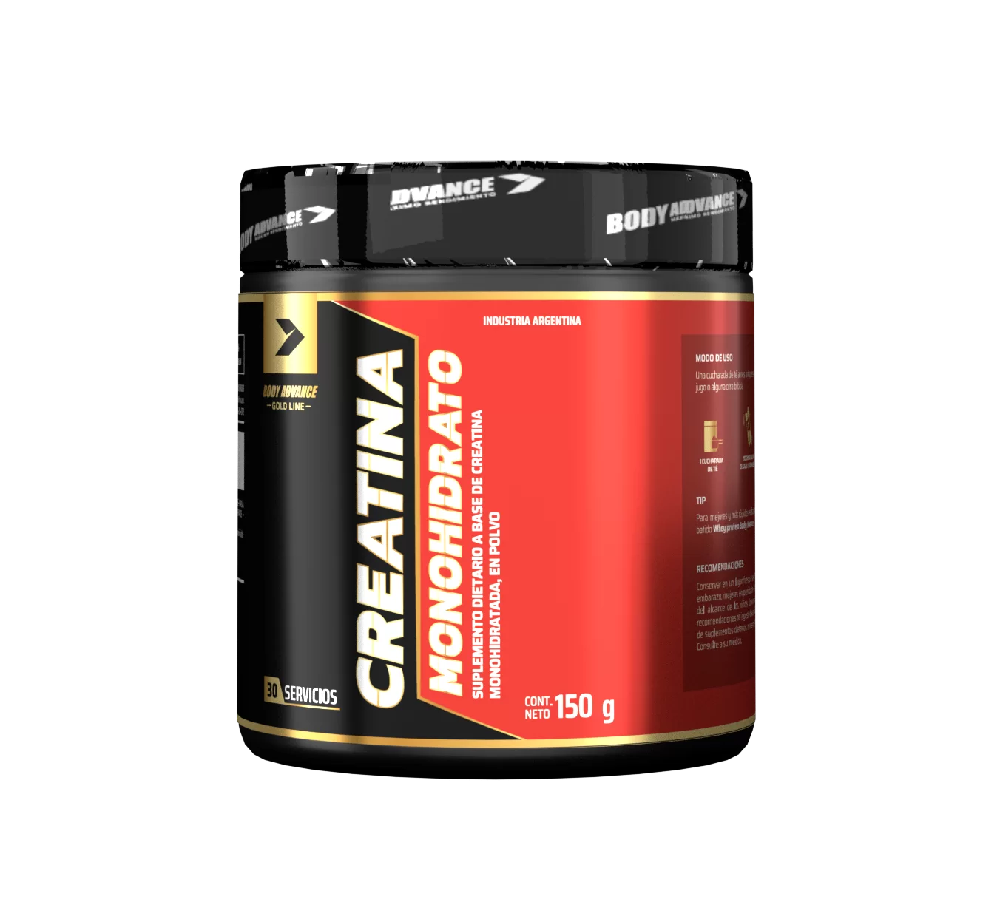
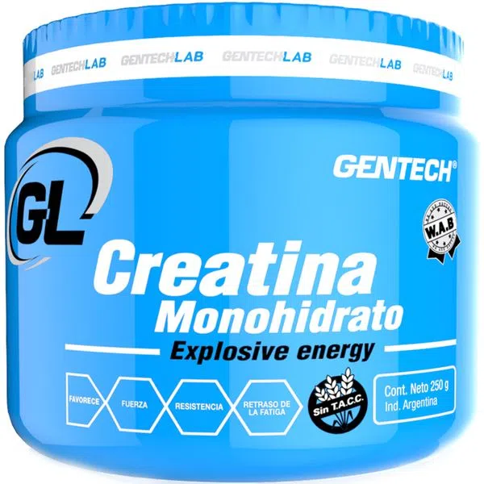
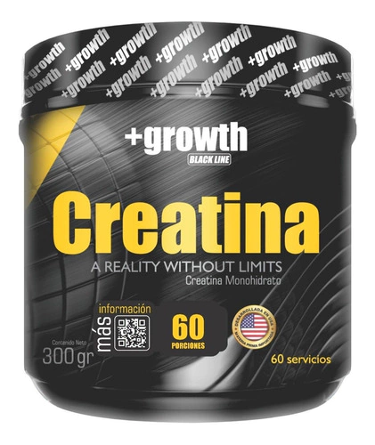
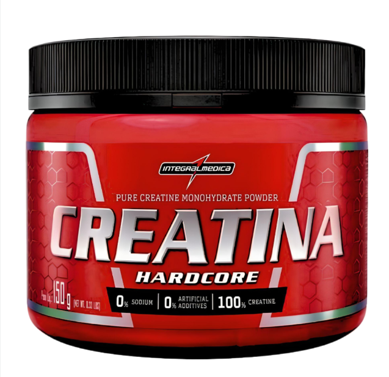
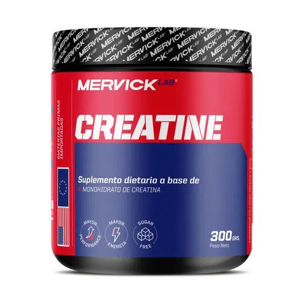
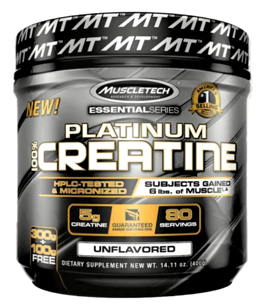
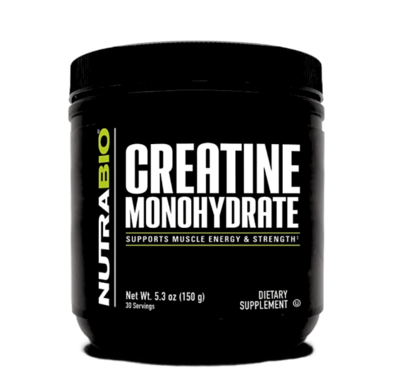
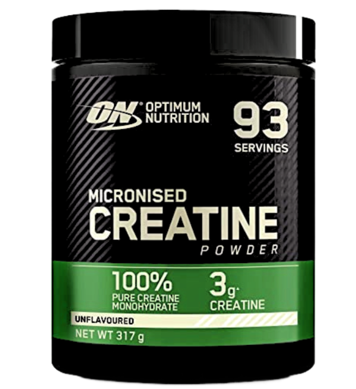
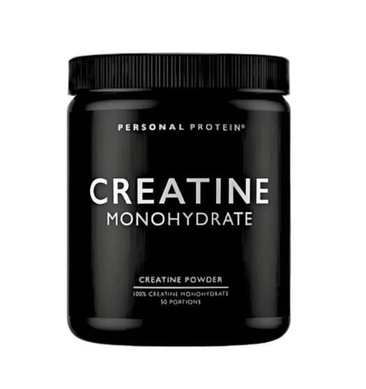
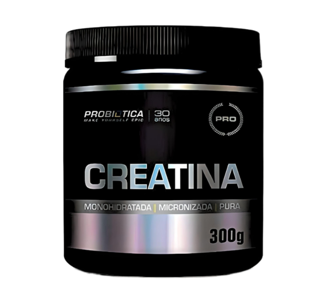
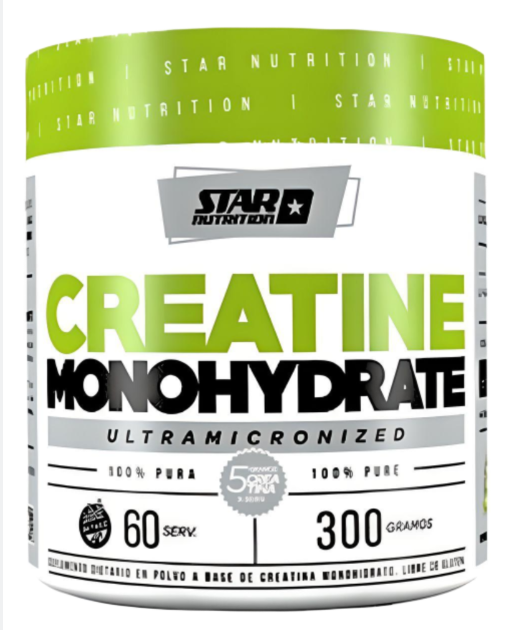
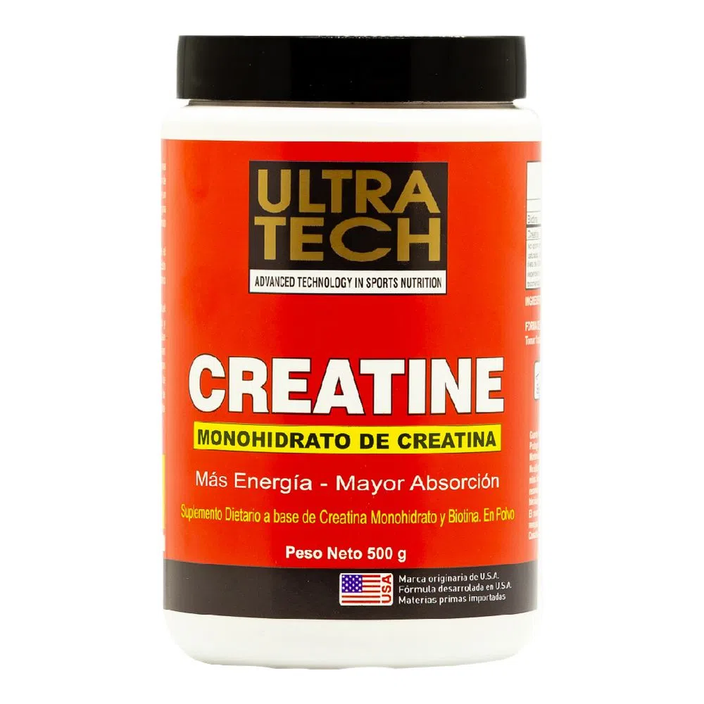
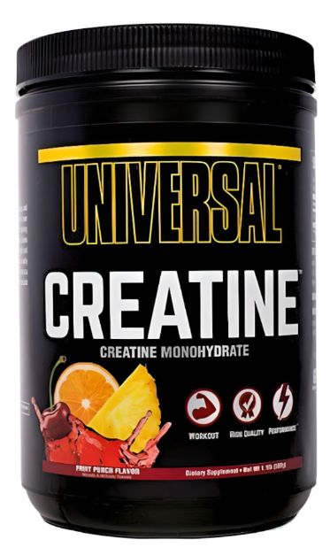
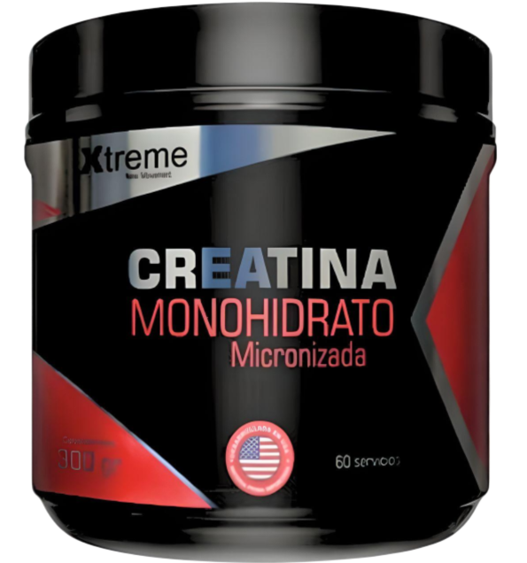
¿Qué es la creatina?
La creatina es una sustancia natural que el propio organismo humano es capaz de sintetizar. Sin
embargo, la capacidad de nuestro cuerpo para sintetizarla se limita a 1 gramo diario aproximadamente
a través del hígado, y el resto debe consumirse mediante la dieta, siendo la carne y el pescado los
principales alimentos ricos en esta sustancia. Debido a esa limitación del cuerpo para generarla,
este suplemento puede aportarnos numerosos beneficios, seamos o no deportistas.
¿Para qué sirve?
La creatina es uno de los suplementos más estudiados y con mayores efectos demostrados por la
ciencia. Su principal función es almacenar energía en los músculos, lo que ayudará a realizar más
esfuerzos (más repeticiones, por ejemplo), algo que en consecuencia aumentará el rendimiento y la
masa muscular.
Así pues, al tomar una suplementación extra de creatina, el rendimiento físico se vera mejorado ya
que permite una mayor duración de la actividad muscular intensa y a la vez un retraso de la fatiga.
En una revisión de más de veinte estudios, se llegó a la conclusión de que la suplementación con
creatina aumenta hasta un 8% la fuerza, y hasta un 14% el número de repeticiones realizadas.
¿Cómo tomar creatina?
Aunque la recomendación es tomar alrededor de 5 gramos diarios de creatina, siendo esta una dosis
muy estudiada y completamente segura, algunos autores sugieren moverse entre los 0.08 g/kg y los
0.10 g/kg de peso corporal. Por ejemplo, si una persona ronda los 65 kg, la dosis que debe tomar es
alrededor de 6 gramos diarios. Por tanto cada individuo debe adaptar su ingesta.
Cuándo tomar creatina: ¿antes o después de entrenar?
Respecto a la hora adecuada para tomarlo, existen diferentes opciones, pero la opción ideal según la
mayoría de expertos sería tomar la creatina después de entrenar. En cualquier caso, no hay una hora
perfecta a la que tomar la dosis, simplemente es cuestión de probar donde mejor encaje en la rutina
de cada uno.
Así mismo, los días de descanso puede reducirse la dosis a la mitad si se desea, aunque no es
necesario y se puede seguir suplementando con la misma cantidad.
¿Se puede tomar Creatina todo el año?
Esta es una de las preguntas más frecuentes, ¿podemos tomar creatina a diario durante todo el año?
Sí, la puede tomarse de forma continuada durante todo el año sin problemas. Sin embargo, algunos
autores aconsejan realizar descansos de algunas semanas periódicamente, por ejemplo cada 6 meses. En
particular, cuando se realizan ejercicios de levantamiento de peso, es común cesar la toma de
creatina cuando se empieza la fase de definición, aunque no tiene por qué hacerse.
¿Debe tomarse también los días de descanso?
No hay que tomar la creatina únicamente cuando se entrena, también se debe tomar a diario, incluso
los días de descanso. Algunos autores sugieren reducir la dosis a la mitad los días que no se
entrena, sin dejar de tomarla totalmente; nosotros solemos recomendar siempre la misma cantidad para
no sufrir olvidos o fallos.